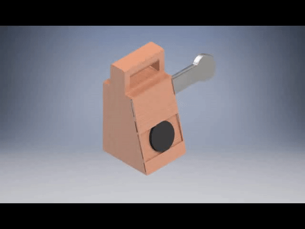

Last Spring I decided to redesign the mandoline with two of my friends. Our motivation to do this stemmed
from our own struggles with using a mandoline, and how thinly
slicing vegetables with a knife was beyond any of our skill levels. We were frustrated with how the
mandoline seemed like a visit to the ER waiting to happen, so thus began our
journey in creating our own mandoline.
My Role
Product Designer
User Researcher
Design Process
Our process consisted of first doing some historical research on the mandoline, then gathering data from a
pool of interviewees. Once we
had our data we would be ready to start brainstorming possible redesigns, and then making the prototypes.
Interviews & Data
We utilized the Master-Apprentice Model in our interviews where we had interviewees explain to us what the
mandoline was, what it was
used for, and how to use it as if we had no idea. However, we recognized that this method does have some
shortcomings such as giving the
'master' a label of infallible knowledge. Thus, we also just observed users attempting to use the tool
which proved very beneficial.
Demographic
Pain Points
At this point, we created a design space based off of our data that gives us a sense of what the current
playing field for tools that could
thinly slice an object is
Sketches
The Redesign
Digital Rendering

Physical Rendering
Key Features
Final Comments
Our team realized that there are some tradeoffs with our redesign (mostly monetary), but we believe the added benefits outweigh those dollars. We plan
to look deeper into the economical side of our redesign, and then create a working prototype to test and use for ourselves. I wanted to give a lot of
credit to Don Norman for his input as well as his book, Design of Everyday Things, that acted like a textbook for me and my group throughout the
design process.